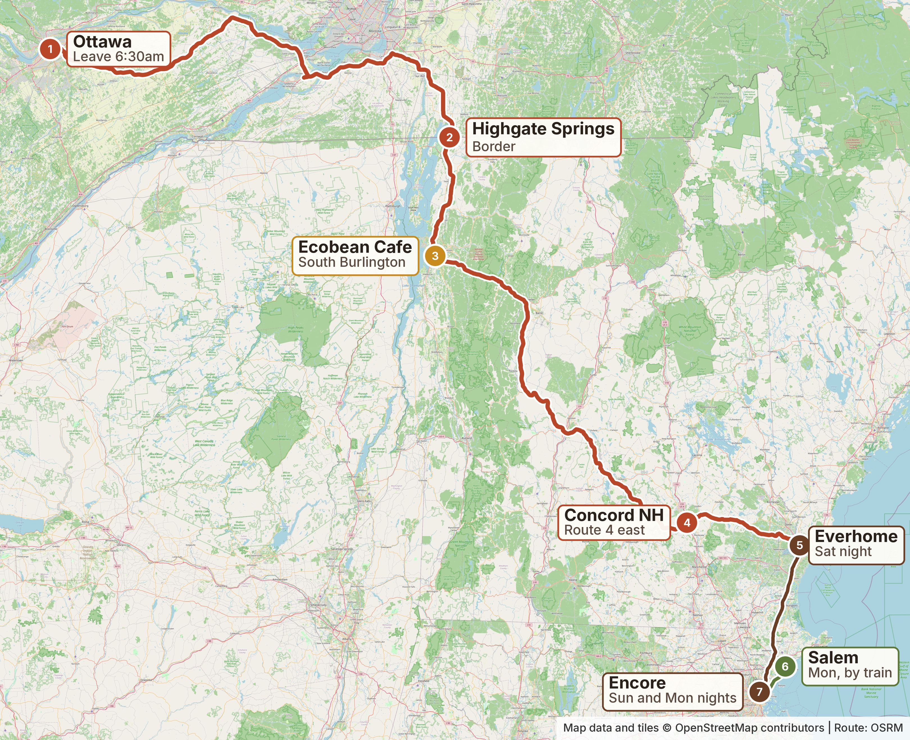
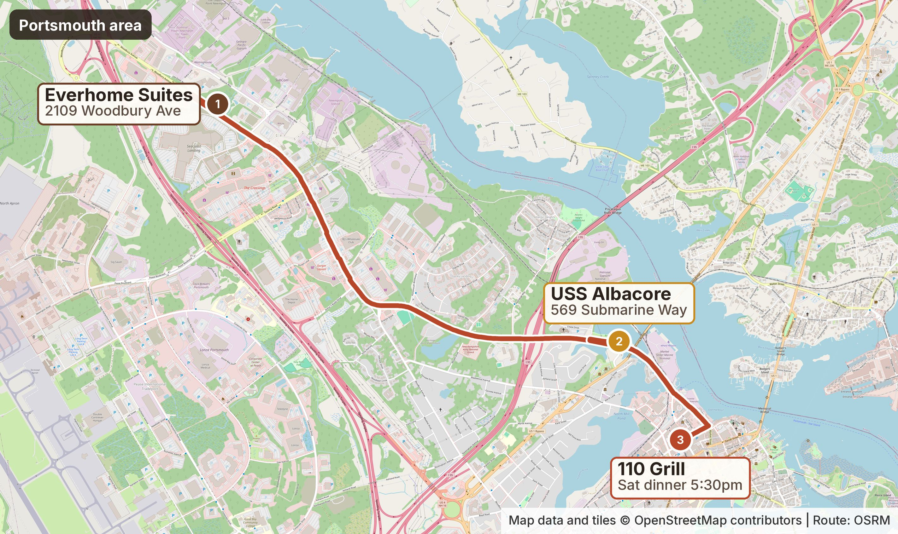
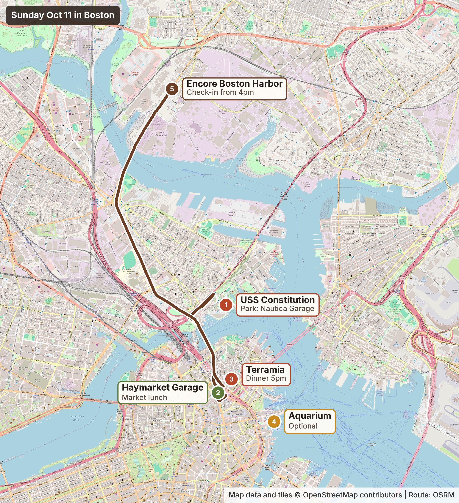
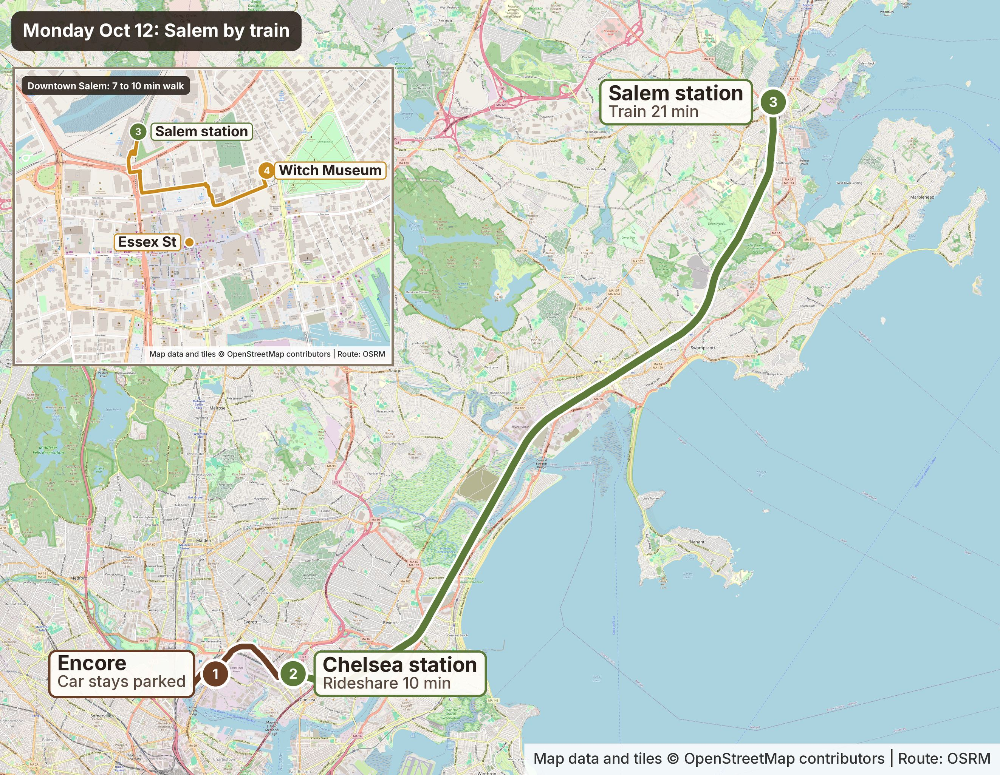

Road routes from OSRM. Monday rail line from MBTA data. For planning only.
SAT10 Ottawa to Portsmouth
All times are estimates Check Google Maps the night before.
- 6:00amLeave Ottawa
Take the 417 to Montreal, then the A30 and A35 south.
- Est.Cross at Philipsburg QC / Highgate Springs VT
Open 24 hours. Budget 20 to 45 minutes. Then I-89 south.
- Est. 10:00 to 10:45amEcobean Cafe, South Burlington VT
3.5 to 4 hr from Ottawa plus the border. Just off I-89 exit 14. Stop about 30 to 45 min.
- Est. 3 to 3.5 hrI-89 south to Concord NH, then Route 4 east
On to Portsmouth and Newington.
- Est. 2:00pmArrive at Everhome Suites
Target arrival. Check-in is 3:00pm.
- Est. 3:30pmUSS Albacore
About 15 to 20 min drive from the hotel. Aim to be aboard by about 3:30pm. Done by about 4:15 to 4:30pm. Closes 5pm.
- 5:30pmDinner at 110 Grill Portsmouth
About 5 min from the Albacore. Reserved.
🛂 Border tips
- Oct 10 is Canadian Thanksgiving weekend. Expect heavier southbound traffic.
- Budget 20 to 45 minutes at the border.
- Check the live Highgate Springs wait at bwt.cbp.gov before leaving.
- Backup: A15 to Lacolle / Champlain, then US-2 across into Burlington. Adds about 20 to 30 minutes.
☕ Ecobean Cafe
- 150 Dorset St, Suite 304, South Burlington VT 05403
- Sat 9am to 7pm. Closed Sunday.
- Organic coffee, smoothies, bowls, breakfast.
- 802-497-0510. No phone orders. Order online at ecobeancafe.com.
⚓ USS Albacore
- Albacore Park, 569 Submarine Way, Portsmouth NH
- Open 9:30am to 5:00pm on Sat Oct 10.
- Ages 13+: $14. Both kids are 13+, so $14 each ($56 for 4).
- Not booked yet.
- If hotel arrival slips past about 4:15pm, skip it. Sunday at 9:30am is the backup. That pushes the Constitution later.
🍽️ Dinner: 110 Grill Portsmouth, 5:30pm Reserved
- 103 Hanover St (Portwalk Place), Portsmouth NH 03801
- (603) 373-8312 · Sat 11:30am to 10pm
- Party of 4. Booked, confirmation in email. No deposit.
- 100% of the core menu can be made gluten free.
- AllergyEats allergy-friendly. The manager on staff handles allergy orders.
- Say dairy-free, gluten-free and soy-free when ordering.

SUN11 Portsmouth, then Boston, then Encore
Times are estimates Check Google Maps the night before.
- 10:30 to 11:00amLeave Portsmouth
Everhome checkout is 11am.
- Est. 1 to 1.25 hrDrive to the Charlestown Navy Yard and the USS Constitution
Park at Nautica Garage. Spend about 1 to 1.5 hr at the ship and the Navy Yard.
- Est. 12:30pmDrive a few minutes to the North End and Haymarket area
Park for the afternoon at Haymarket Center Garage, entrance at 136 Blackstone St.
- LunchBoston Public Market, 100 Hanover St
Jennifer Lee's Shoppe inside.
- AfternoonSightseeing on foot
North End, Faneuil Hall and Quincy Market, the waterfront. Aquarium optional, depending on time.
- 4:30 to 5:00pmEarly dinner at Terramia, North End
Party of 4, about 4:30 to 5pm. They expect you. Nothing is booked.
- After dinnerWalk back to Haymarket Garage, drive 10 to 15 min to Encore
Check in (from 4pm) and relax.
The day in one line: Portsmouth, USS Constitution, park at Haymarket, Boston Public Market lunch, North End / Faneuil Hall / Aquarium area, early dinner at Terramia, Encore. Only two parking stops, and you're done driving for the night after dinner.
⚓ USS Constitution and Navy Yard
- Free. Open 10am to 6pm. Photo ID for ages 18+. Security screening.
- Can close at short notice for Navy operations or weather.
- Museum next door: by donation. USS Cassin Young: do not count on it.
- Parking: Nautica Parking Garage, 88 Constitution Rd, Charlestown MA. Across from the Navy Yard Visitor Center. About a 5 to 10 min walk to the ship. Validate at the USS Constitution Museum.
- Visitor info (navy.mil)
🅿️ Afternoon parking: Haymarket
- Haymarket Center Garage, entrance at 136 Blackstone St. Cars enter and exit on Sudbury St.
- Boston Public Market validates $3 for up to 3 hr with a purchase. Regular rates apply after that.
- Parking from about 12:30pm until after dinner is likely 5 to 6 hr, so expect regular rates for the extra time. Posted weekend rate: $16 from 1.5 hr until 5am.
- Market parking info
🥪 Lunch: Boston Public Market
- 100 Hanover St, Boston. Jennifer Lee's Shoppe inside is Top 9 allergen free and vegan, with sweet and savory items.
- Savory items contain coconut.
- bostonpublicmarket.org · Jennifer Lee's page
🚶 Walk, don't move the car
- From the market: North End 3 min. Faneuil Hall and Quincy Market 3 min. Aquarium 13 min.
- Aquarium (optional): 1 Central Wharf. Timed tickets. Adults $39.95, teens pay adult. Last entry 4:40pm. Can sell out on Oct 11. Not booked.
🍝 Dinner: Terramia Ristorante No reservation
- 98 Salem St, Boston MA 02113 · (617) 340-5552
- Sun Oct 11, about 4:30 to 5pm. Party of 4. Opens 3:30pm Sundays.
- They expect you. There is no reservation.
- On Oct 1 they said they will do their best on gluten, dairy and soy. Ask the server to walk each dish with the kitchen.
- They cannot guarantee an allergen-free kitchen, or no cross-contact.
- terramiaristorante.com
If Saturday slips: the Albacore moves to Sunday at its 9:30am opening. Leave Portsmouth after that. Everything shifts about an hour later.

MON12 Salem by commuter rail
Weekday train schedule US holiday. Train times from the MBTA. Other times are estimates.
- Est. 8:50amLeave the truck at Encore, plugged in
J1772 Level 2 in the self-park garage. Rideshare about 10 min to Chelsea station, 174 Everett Ave.
- 9:16amTrain from Chelsea to Salem (Train 27)
Suggested. Arrives Salem 9:37am. About 21 min.
- Est. 9:45amWalk into downtown Salem
About 7 min to Essex St, about 10 min to the Salem Witch Museum.
- DaySalem activities To plan
Not decided yet.
- LaterTrain from Salem back to Chelsea
Pick one from the list below. About 21 min.
- Est. 20 min laterRideshare from Chelsea to Encore
About 10 min. Evening at Encore.
The day in one line: Encore, rideshare to Chelsea, train to Salem, walk downtown, Salem day, train back to Chelsea, rideshare to Encore. No driving or parking in Salem, and the truck charges all day.
🚆 Train times, Mon Oct 12
Newburyport/Rockport Line, regular weekday schedule. Recheck the week of the trip on mbta.com.
To Salem
| Train | North Sta. | Chelsea | Salem |
|---|---|---|---|
| 125 | 8:35am | 8:46am | 9:07am |
| 27 | 9:05am | 9:16am | 9:37am |
| 1129 | 9:35am | 9:46am | 10:07am |
| 131 | 10:05am | 10:16am | 10:37am |
| 33 | 10:35am | 10:46am | 11:07am |
| 137 | 11:35am | 11:46am | 12:07pm |
Back from Salem
| Train | Salem | Chelsea | North Sta. |
|---|---|---|---|
| 148 | 2:57pm | 3:18pm | 3:34pm |
| 1150 | 3:27pm | 3:48pm | 4:03pm |
| 52 | 3:57pm | 4:18pm | 4:34pm |
| 154 | 4:25pm | 4:46pm | 5:02pm |
| 58 | 5:19pm | 5:40pm | 5:56pm |
| 162 | 5:52pm | 6:13pm | 6:32pm |
| 66 | 6:27pm | 6:48pm | 7:04pm |
| 172 | 7:29pm | 7:50pm | 8:06pm |
| 76 | 8:27pm | 8:47pm | 9:03pm |
| 88 (last) | 11:05pm | 11:26pm | 11:42pm |
Also 9:35pm and 10:05pm from Salem. Source: mbta.com, checked Oct 2. Same times as Sep 27.
🎟️ Fares
- Salem is Zone 3: $8 one way per person. Round trip for four: $64.
- Teens pay full fare. Only kids 11 and under ride free. Student discounts are for enrolled Massachusetts schools only.
- Cheaper: a $10 Columbus Day Holiday Weekend Pass each (unlimited, Sat Oct 10 to Mon Oct 12). $40 for four. In the mTicket app, on sale starting Sun Oct 5.
- No reservations, any train. Activate in mTicket before boarding. No ticket machines at Chelsea or Salem.
👥 Good to know
- Oct 12 is Columbus Day / Indigenous Peoples' Day in the US and Thanksgiving in Canada.
- The MBTA runs its regular weekday schedule on Oct 12. The extra Haunted Happenings trains are weekends only.
- Salem's event restrictions cover Oct 10 to 12. Expect crowded trains, most of all on returns late in the day and after dark.
- No train leaves Salem between 4:25 and 5:19pm, or between 6:27 and 7:29pm. Do not count on the last train (11:05pm).
- Chelsea station, 174 Everett Ave: rideshare pickup and drop-off. No parking. Ramp to the platform.
- Backup: North Station, 135 Causeway St. Trains leave 11 min before Chelsea.
- Salem station, 252 Bridge St · Salem Witch Museum
- The truck stays at Encore all day, charging.

TUE13 Home to Ottawa
- Est. 10 to 11amLeave Encore
Check-out is 11am. Expect holiday-weekend traffic.
🏨 Hotels and bookings
Everhome Suites Portsmouth-Newington Booked
- Sat Oct 10 to Sun Oct 11. Booked, confirmation in email. Non-refundable.
- Check-in 3pm. Check-out 11am.
- 2109 Woodbury Ave, Newington NH
- (603) 319-4683
- Suite, 2 queens, full kitchen.
- No EV charging at the hotel. Fast charge about 4 min away: IONNA, 1600 Woodbury Ave, Portsmouth (CCS).
Encore Boston Harbor Booked
- Sun Oct 11 to Tue Oct 13. Booked, confirmation in email. Non-refundable. Cannot extend.
- Check-in 4pm. Check-out 11am. Early check-in from 11am if available: call (857) 770-7000.
- 1 Broadway, Everett MA
- Premier Room, 2 doubles, harbor view.
- Free self-parking. EV chargers in the garage (see EV charging).
Reservations and tickets
- 110 Grill, Sat 5:30pm Reserved Party of 4. Confirmation in email.
- USS Albacore, Sat Not booked
- USS Constitution, Sun No tickets needed Free. First come, first served.
- Aquarium, Sun Optional Decide on Aquarium tickets.
- Terramia, Sun 4:30 to 5pm No reservation They expect you. Nothing is booked.
- Mon train to Salem No booking Buy fares in mTicket starting Sun Oct 5.
🥗 Dietary needs
Dairy-freeGluten-freeSoy-free
Check menus and ask about ingredients at every stop. Say all three every time: dairy-free, gluten-free and soy-free.
110 Grill · Portsmouth NH (Sat dinner, reserved)
- 103 Hanover St (Portwalk Place) · (603) 373-8312
- 100% of the core menu can be made gluten free. AllergyEats allergy-friendly. The manager on staff handles allergy orders.
- Say dairy-free, gluten-free and soy-free when ordering.
Jennifer Lee's Bakery · Boston Public Market (Sun lunch)
- 100 Hanover St, Boston · Stall opens 10am · Market Sun 8am to 6pm
- This is the planned lunch, and the stop built for these allergies. Vegan and top 9 allergen free, including dairy, gluten and soy. Savory items all day.
- Savory items contain coconut and may contain legumes.
Terramia Ristorante · Boston North End (Sun dinner, no reservation)
- 98 Salem St · (617) 340-5552
- About 4:30 to 5pm. Party of 4. They expect you. Nothing is booked.
- On Oct 1 they said they will do their best on gluten, dairy and soy. The server should walk dishes with the kitchen.
- They cannot guarantee an allergen-free kitchen or no cross-contact.
The Green Room · Portsmouth NH
- 41 Vaughan Mall · Weekends 7am to 5pm
- Smoothies, bowls, and organic juices. Possible early Sunday breakfast.
Bite Me Kupcakez · Merrimack NH (backup)
- 4 Mound Court · 603-674-4459 · Sat 9:30am to 5:30pm
- Dedicated gluten-free and nut-free bakery and cafe. Has dairy-free and soy-free options.
- Call to confirm the dairy-free cheese is soy-free. Off the Route 4 path.
Troy's Fresh Kitchen · Londonderry NH (backup)
- 4 Orchard View Dr · Sat 8am to 2pm
- 100% gluten-free and dairy-free.
- Plant-based meats and cheeses contain soy. Off the Route 4 path. Closes at 2pm.
⚡ EV charging
The truck is a Ford F-150 Lightning. J1772 for Level 2, CCS for fast charging. Everhome has no charger.
Sat night, near Everhome: IONNA fast charger
- 1600 Woodbury Ave, Portsmouth NH (Whole Foods lot). About 4 min from Everhome.
- DC fast, up to 400 kW. 8 CCS and 4 NACS connectors. Open 24/7.
- Price is per kWh plus tax. Check the IONNA app, since its site shows different prices.
- ionna.com
Sat dinner, near 110 Grill: ChargePoint
- Portwalk Garage, entrance at 195 Hanover St. One universal ChargePoint charger for self-park. Fees apply.
- Backup: Hanover Parking Garage, 34 Hanover St, just inside the Fleet St entrance. ChargePoint Level 2, 2 plugs. $2 per hour for 1 to 4 hr, plus parking.
- Level 2 only, so this is a top-up during dinner.
Sun and Mon nights: Encore garage, Level 2
- 40 Level 2 chargers on levels B2 and B3 of the free self-park garage, plus 21 in valet parking.
- J1772 plugs, 208 volts, 64 amps, 25 ft cables.
- Drivers report the chargers run through the Loop app (scan the QR code). There may be a charge.
- Park in an EV spot only while charging. The truck stays plugged in all day Monday.
✅ Still to plan
- Decide on Aquarium tickets (optional)
- Terramia expects you Sun 4:30 to 5pm, but nothing is booked
- Plan Salem activities
- Buy Mon train fares in mTicket (starting Sun Oct 5)
- Recheck Mon train times the week of the trip
- Restaurants
- Calendar blocks